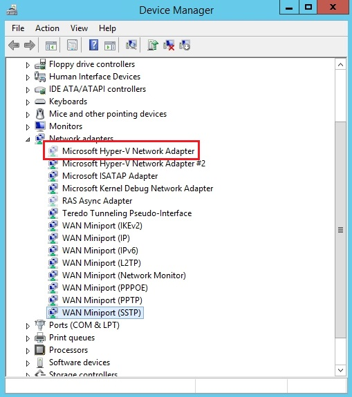

警告
本記事は、投稿より時間が経過しており、一部内容が古い可能性があります。
表題の、Azure 仮想マシンにおける意図せず不要な NIC が増える問題につきましては、皆様のフィードバックのおかげで機能追加が実現し発生しなくなりました。このため、この Blog で紹介している方法で NIC を削除いただく必要はありません。
8 月 3 日より 皆様のお声のおかげで MAC アドレスが固定化する機能が追加され、それに伴い 不要な NIC 情報が増える問題解消しました。皆様のお声により Azure がまさに改善した 1 件となりました。重ねてお礼を申し上げます。
今後とも貴重なご意見やフィードバックを頂戴できますと幸いです。
皆さんこんにちは。
Azure サポートチームの中垣内 (ナカガイト) です。私事ではありますが、昨年末に結婚し新生活真っ只中です。一緒に住み始めると、日々、結婚する前まで知らなかった相手の新たな一面が増えていきますね。
さて、日々増えるものと言えば、Azure 上の仮想マシンを毎日再起動している場合、不要な NIC の情報が増えます。不要な NIC の情報が増えすぎるとファイル共有接続が出来なくなるといった問題が発生します。今回の記事では、増えてしまった不要な NIC の情報を削除するとともに、今後増やさない方法についてご紹介します。NIC 削除方法は OS によって異なるため、Windows Server 2008 R2 以前のOS と Windows Server 2012 以降のOS の削除方法に分けて紹介します。
不要 NIC が作られる要因
不要な NIC の情報を削除手順を紹介する前にまずは NIC の情報が増える事象のメカニズムについて紹介します。
Azure に限らず、Windows OS では、デバイスの種類、搭載位置も含めてネットワークインターフェース (NIC) を認識します。そのため、Azure で新しいノードへ VM を移動する (停止/起動) たびに、NIC が新しいデバイスとして認識 (※) されます。
この際、前回使用された NIC の情報はレジストリに保持された状態となります。これはハードウェアの搭載位置や種類等、ハードウェアの構成に変更が加わった場合における Windows の想定された動作であり、この動作を設定で変更することはできません。
注意：デバイスの再認識について
Azure 上で仮想マシンを停止すると、仮想マシン上の OS を停止するだけではなく、Azure がプロビジョニングしたハードウェアやネットワーク リソースをその時点で解放します。
- 参考情報: Azure 仮想マシンにおける操作 (再起動、停止/起動、再デプロイ、再適用) について https://jpaztech.github.io/blog/vm/vm-operation/
そのため、仮想マシンを改めて起動すると、新たにハードウェア リソースの割り当てが行われ、NIC が追加される動作となります。
Windows Server 2012 での手順
不要なNICの情報を削除するための PowerShell スクリプトを作成し、シャットダウン スクリプトにて当該スクリプトを実行することで、毎回のOS起動時に不要なNICの情報を削除する方法です。
手順概要:
- 事前準備 A から C までを実行します。
- シャットダウン スクリプトの ポリシー設定を行います。
事前準備 A (Devcon の入手)
1) 次の KB から、Windows 8 (Windows Server 2012) の Fix it (MicrosoftFixit25010.mini.diagcab) を C:\Temp に保存します。
- 参考情報: Error message when you try to set an IP address on a network adapter URL : https://support.microsoft.com/en-us/kb/269155/en-us
2) 管理者として起動したコマンド プロンプトで、上記ファイルをダウンロードしたパスに移動します。
1 | cd /d C:\Temp |
3) 次のコマンドを順に実行し、使用する devcon コマンドを取得します。
1 | md NICCleanup |
これにより、C:\Temp\ExpandFiles にはそれぞれのアーキテクチャ用の Devcon が展開されます。
4) ご使用の環境に対応するファイルのファイル名を「devcon.exe」に変更します。
devcon_V8_AMD64.exe : 64 bit 環境用
devcon_V8_I386.exe : 32 bit 環境用
devcon_V7_IA64.exe : IA64 環境用
事前準備 B (Device Management PowerShell の入手)
1) 以下のページから、DeviceManagement.zip を入手します。
- 参考情報: Device Management PowerShell Cmdlets URL : https://gallery.technet.microsoft.com/scriptcenter/Device-Management-7fad2388
2) ダウンロードしたファイルを右クリックしてプロパティを開きます。
3) General（一般）タブにて、Unblock（ブロックの解除）をクリックして [OK] を押します。
4) 任意の場所に解凍し、作成される「Release」フォルダを C:\Temp\NICCleanup フォルダに移動 (またはコピー) します。
事前準備 C (スクリプトの作成)
1) C:\Temp\NICCleanup フォルダに次のスクリプト ファイルを作成します。
- HiddenNICRemove.ps1
1 | Import-Module .\Release\DeviceManagement.psd1 |
シャットダウン スクリプトへの登録
1) 以下内容のバッチファイルを作成します。
- NICCleanup.bat
1 | cd /d C:\Temp\NICCleanup |
2) スタート メニューから [ファイル名を指定して実行] を選択し、gpedit.msc を起動します。
3) 左ペインにて[コンピューターの構成] - [Windows の設定] と展開し、 [スクリプト（スタートアップ/シャットダウン）]を選択します。
4) 右ペインで[シャットダウン]を右クリックし、[プロパティ]を開きます。
5) [追加] ボタンを押し、1. で作成した C:\Temp\NICCleanup.bat のパスを指定します。
6) [OK] を押して設定を保存します。（ローカル グループ ポリシー エディタは終了しても問題ありません）
Windows Server 2008 R2 以前のOS の設定方法
シャットダウン スクリプトに不要なNICの情報を削除するためのバッチファイルを配置し、OS 起動時に不要なNIC を削除する手順です。
手順:
- 次の KB から、「For Windows 7, Windows Vista, Windows XP, Windows Server 2008 or Windows Server 2003」 の Fix it (MicrosoftFixit50609.msi) を C:\Temp に保存します。
- 参考情報: Error message when you try to set an IP address on a network adapter https://support.microsoft.com/en-us/kb/269155/en-us
2) C:\Temp 配下に以下のような内容のバッチファイルを NICCleanup.bat として作成します。
- NICCleanup.bat
1 | @echo off |
3) スタート メニューから [ファイル名を指定して実行] を選択し、gpedit.msc を起動します。
4) 左ペインにて[コンピューターの構成] - [Windows の設定] と展開し、 [スクリプト（スタートアップ/シャットダウン）]を選択します。
5) 右ペインで[シャットダウン]を右クリックし、[プロパティ]を開きます。
6) [追加] ボタンを押し、手順 2 で作成した C:\Temp\NICCleanup.bat のパスを指定します。
7) [OK] を押して設定を保存します。（ローカル グループ ポリシー エディタは終了しても問題ありません）
※本手順では、作業フォルダを C:\Temp 以下としておりますので、適宜読み替えて作業をご実施ください。
補足：不要なNIC の存在の確認方法
不要な NIC の有無を確認するためには少しコツが必要です。確認方法についても併せて案内いたします。
手順：
- コマンド プロンプトを起動します。
- 「set devmgr_show_nonpresent_devices=1」と入力して、Enter キーを押します。
- 「devmgmt.msc」と入力し、Enter キーを押します。
- [表示] をクリックして、[非表示デバイスの表示] をクリックします。
- [ネットワーク アダプター] ツリーを展開します。
- 赤枠で示すように、アイコンが半透明になった状態で、不要な NIC の情報が表示されます。

※本情報の内容（添付文書、リンク先などを含む）は、作成日時点でのものであり、予告なく変更される場合があります。